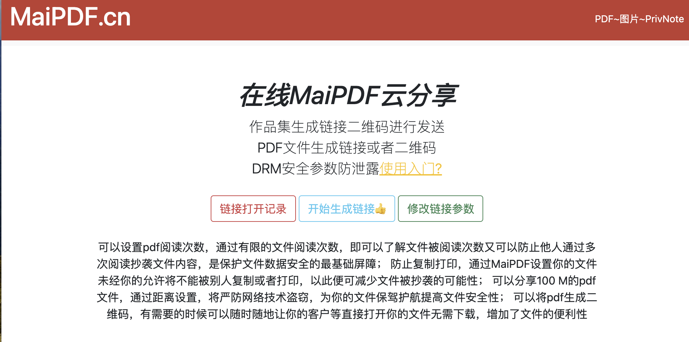
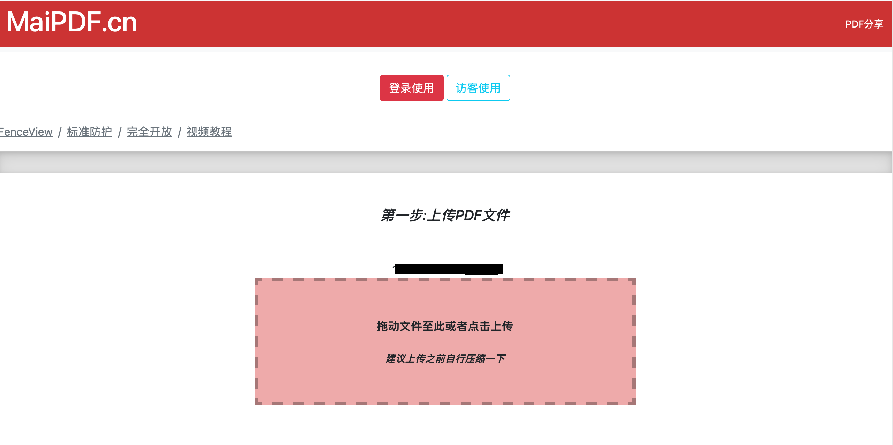
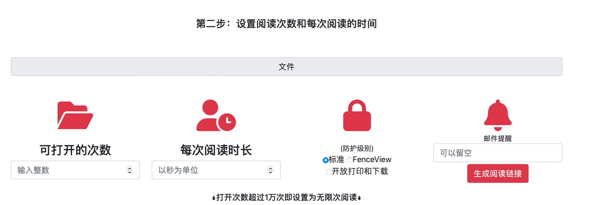

MaiPDF完整使用指南：从入门到精通
本指南将详细介绍如何使用
MaiPDF
进行专业的PDF文档管理、追踪和分析。无论您是初学者还是高级用户，都能在这里找到所需的信息。
📋 目录
- 🚀 MaiPDF简介
- 📝 快速开始
- 📤 文件上传流程
- ⚙️ 设置配置
- 🔗 链接生成
- 📊 追踪分析
- 🔧 高级功能
- 🛡️ 安全功能
- 🔧 常见问题
流程图
交互式流程图
flowchart TD
A[开始] --> B[处理步骤]
B --> C[收集数据]
C --> D[分析结果]
D --> E[完成]
style A fill:#667eea,stroke:#764ba2,stroke-width:2px,color:#fff
style E fill:#48bb78,stroke:#38a169,stroke-width:2px,color:#fff
🚀 MaiPDF简介
什么是MaiPDF？
MaiPDF是一款专业的PDF文档管理和追踪平台，它能够：
- 将普通PDF转换为可追踪的智能链接
- 记录访问者的详细信息（IP地址、访问时间等）
- 提供多层次的文档安全保护
- 生成详细的访问分析报告

📝 快速开始
开始之前的准备
使用MaiPDF之前，请确保您：
- 拥有需要追踪的PDF文件
- 明确追踪目标和需求
- 了解相关的隐私法规要求
📤 文件上传流程
访问上传界面
进入MaiPDF平台后，找到文件上传区域。界面设计简洁直观，支持拖拽上传。

选择并上传PDF文件
支持多种上传方式：
- 点击选择文件
- 拖拽文件到上传区域
- 支持批量上传多个文件
💡 上传提示：
- 支持的文件格式：PDF
- 单个文件大小限制：通常为50MB以内
- 建议文件名使用英文或数字，避免特殊字符
⚙️ 设置配置
基础设置配置
上传完成后，您可以配置各种追踪和安全选项：

🔗 链接生成

📊 追踪分析